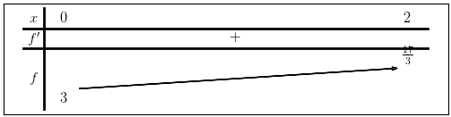

Tìm giá trị lớn nhất và nhỏ nhất của hàm số \(f{\left (x \right )} = \frac{1}{1 + x} \left(3 + 3 x + 2 x^{2}\right)\)
Mẫu số của hàm số là \(1 + x\) \(1 + x = 0\) \(\Leftrightarrow x=-1\) Để hàm số xác định thì mẫu số khác 0 Vậy ta có tập xác định \(D=\left(-\infty, -1\right) \cup \left(-1, \infty\right)\)
\(f'(x)=(\frac{1}{1 + x} \left(3 + 3 x + 2 x^{2}\right))'\) \(\Leftrightarrow \operatorname{f'}{\left (x \right )} = \frac{2 x \left(2 + x\right)}{1 + 2 x + x^{2}}\)
\(\frac{2 x \left(2 + x\right)}{1 + 2 x + x^{2}} = 0\) \(\Leftrightarrow \frac{2 x \left(2 + x\right)}{\left(1 + x\right)^{2}} = 0\) \(\Leftrightarrow x=\begin{cases}-2 \\ 0 \\ \end{cases}\)

Vậy ta có: Giá trị nhỏ nhất của hàm số là \(min\ f{\left (x \right )} = f{\left (0 \right )} = 3\) Giá trị lớn nhất của hàm số là \(max\ f{\left (x \right )} = f{\left (2 \right )} = \frac{17}{1 + 2}\)